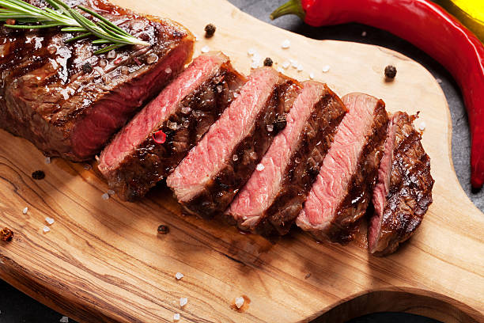

Steak

Medium Rare steak cooked with different kinds of herbs to enhance the steak's flavor
Ingredients
- New York Steak or Sirlion Steak or Ribeye Steak
- butter
- Rosemary
- Garlic
- Salt and Pepper
Steps
- Pat dry- use paper towels to pat the steaks dry to get a perfect sear and reduce oil splatter.
- Season generously just before cooking steaks, sprinkle both sides liberally with salt and pepper.
- Preheat the pan on medium and brush with oil. Using just 1/2 Tbsp oil reduces splatter.
- Sear Steaks- add steaks and sear each side 3-4 minutes until a brown crust has formed then use tongs to turn steaks on their sides and sear edges (1 min per edge).
- Add Butter and Aromatics- melt in butter with quartered garlic cloves and rosemary sprigs. Tilt pan to spoon garlic butter over steaks and cook to 145 degrees F.
- Remove Steak and rest for 10 minutes before slicing against the grain.